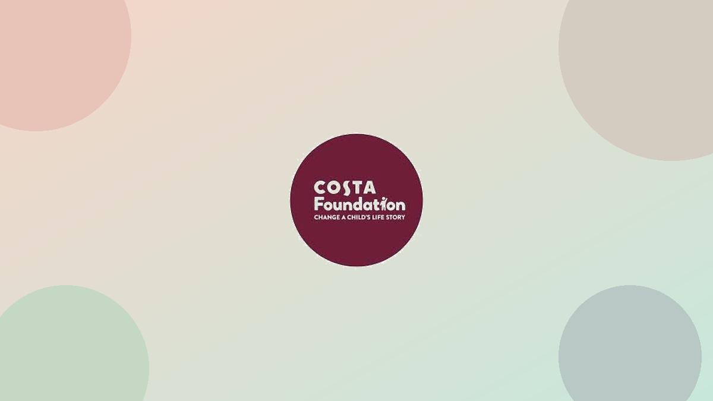
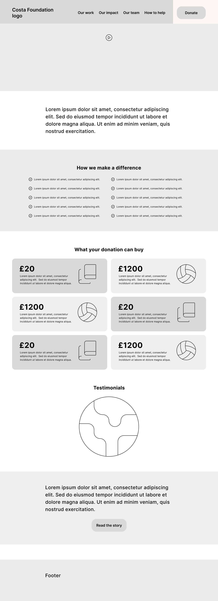
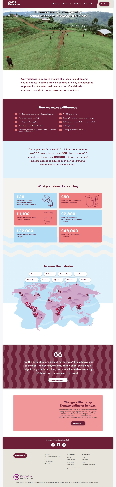

Website Redesign:
Costa Foundation
Redesigning a donation-focused website through heuristics, UX laws and competitive analysis — with no direct access to end users.

- +40% Traffic growth in one quarter
- ↑ Sustained increase in Donate clicks
- 5 UX laws applied to drive design
Overview
As part of a broader effort, I led the redesign of several websites, one of the most relevant being the Costa Foundation site. The challenge was unique: we didn't have direct access to end users. To overcome this, I started with an in-depth benchmarking analysis of major competitors' donation flows and applied UX Laws and usability heuristics to design a more effective experience.
The main objective was to increase donations by simplifying the path to the "Donate" call-to-action.
My role
I led the end-to-end redesign process as the sole UX designer on this project. Without direct access to end users, I relied on secondary research methods — heuristic evaluation, competitive benchmarking, and established UX principles — to build an evidence-based rationale for every design decision.
I was responsible for scoping the brief, producing wireframes, defining the interaction flows, and delivering the final designs including motion UI. I also presented findings and recommendations directly to stakeholders throughout the project.
The challenge
The existing Costa Foundation website had a fragmented donation journey — the primary CTA was buried, navigation relied on a hamburger menu on desktop, and testimonials were presented in an inaccessible carousel format. The absence of direct user research access meant all design decisions needed to be grounded in secondary evidence and established UX principles.
Methods
Heuristic evaluation
I conducted a structured heuristic evaluation of the existing Costa Foundation website using Nielsen's 10 usability heuristics. This surfaced a set of recurring issues: the primary Donate CTA was inconsistently placed, navigation lacked clear signposting of the user's current location, and the content hierarchy did not reflect donation as the primary goal of the site.
Competitive benchmarking
I benchmarked five major charity and donation-focused websites — including Cancer Research UK, Oxfam, and Save the Children — to analyse how they structured their donation flows, surface-level navigation patterns, and CTA placement. Key patterns identified:
- All high-performing charity sites surfaced a "Donate" option in the primary navigation, not buried in submenus.
- Donation CTAs used high-contrast colour differentiated from secondary actions, aligning with the Von Restorff Effect.
- Static testimonial grids consistently outperformed carousels for accessibility and engagement.
- Clear allocation of donations (e.g. "£10 buys X") increased conversion by reducing ambiguity in the giving decision.
UX laws applied
Each design decision was grounded in an established UX law or principle:
- Fitts's Law: The primary CTA ("Donate") is large, easy to click, and placed in high-attention areas — top navigation and above the fold.
- Hick's Law: Clear and limited pathways (Donate, Fundraise, Partner) reduce decision fatigue by minimising the number of choices presented at once.
- Jakob's Law: Structure follows familiar charity website conventions, easing navigation for first-time visitors.
- Von Restorff Effect: The Donate CTA stands out visually against secondary actions through colour and size contrast.
- Aesthetic-Usability Effect: A clean, consistent design increases perceived trustworthiness — a key driver of charitable giving.
Key design decisions
- Moving from a hamburger menu to a full display menu on desktop, improving discoverability of key actions.
- Highlighting the active navigation path so users always know where they are within the site.
- Adding the "Donate" option directly in the main menu, reducing the steps needed to reach the CTA from any page.
- Simplifying and linearising the entire journey to Donate, removing unnecessary intermediate steps.
- Testimonials were relocated to the bottom of the site and restructured to avoid a carousel format, ensuring improved accessibility and readability.
- The "How We Make a Difference" section was kept but expanded into card-based elements specifying where donations could be allocated — directly addressing user anxiety around charitable giving.
Homepage wireframe
Proposed homepage wireframe, showing simplified navigation and highlighted Donate CTA.

Redesigned homepage
The final redesign was delivered as a complete set of high-fidelity pages and interaction flows, including motion UI. Due to space constraints, only the homepage is shown here. The client received the full deliverable covering all core pages and responsive breakpoints.

Outcomes & impact
The redesigned website delivered measurable improvements in traffic and donation engagement — validating the evidence-based design approach taken without direct user access.
- Traffic growth +40% in one quarter
- Donate clicks ↑ Sustained increase post-launch
Structural improvements
- Improved navigation: moved from a hidden hamburger menu to explicit navigation options visible at all times on desktop.
- Reduced the number of steps required to reach the Donate CTA from any page on the site.
- Redesigned the donation flow for greater clarity, reducing friction in the giving journey.
- Created a fully responsive design ensuring a seamless experience on mobile and desktop.